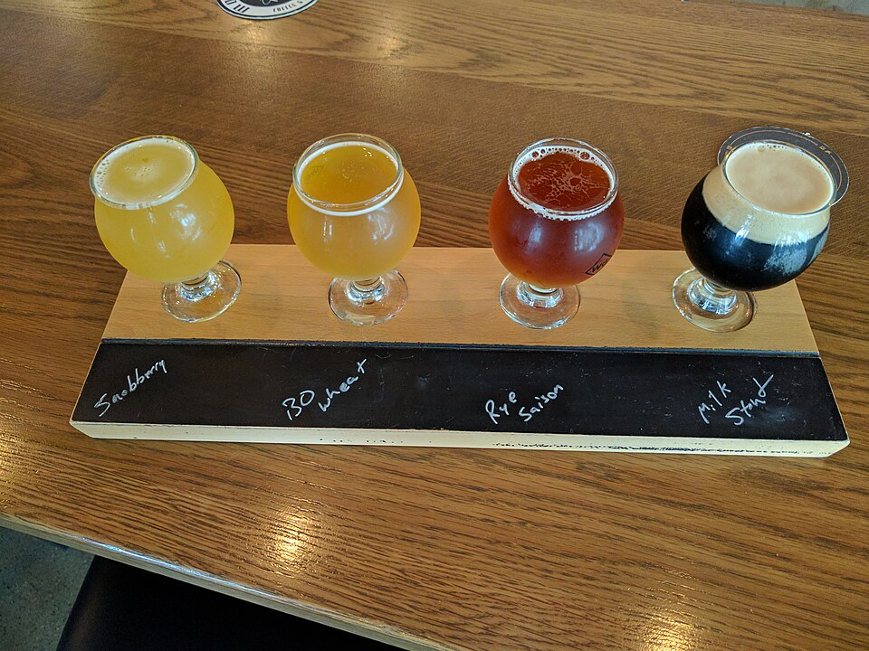

Weekly Schedule
- Tuesday – Sunday: 12:00 PM – 10:00 PM
- Monday: Closed for brewing operations
- Kitchen Closes: 9:30 PM nightly
- 4-Packs to Go: Available during all open hours
Plan your afternoon flight, family dinner, or weekend patio hangout at Town Brewing Company. Conveniently located in historic Wesley Heights right off West Morehead Street, we offer generous on-site parking, a sprawling dog-friendly beer patio, and an active weekly events calendar.

Address:
800 Grandin Road
Charlotte, NC 28208
Historic Wesley Heights Neighborhood
Phone: (980) 237-8628
On-Site Lot: Dedicated parking spaces directly surrounding the brewery building.
Greenway Access: Easily accessible via the Stewart Creek Greenway.
Guidelines for visiting our outdoor lawn and patio with your four-legged companions:


Join our active weekly brewery traditions in Wesley Heights: